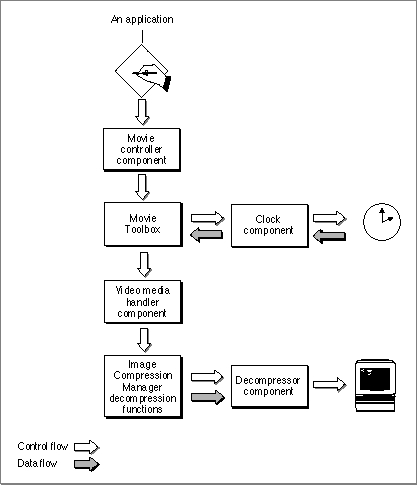

Providing Movie Playback
Figure 1-1 shows the QuickTime components that allow your application to provide movie playback.Figure 1-1 QuickTime components for movie playback
- Your application calls the movie controller component in order to play movies. Movie controller components implement movie controllers, which present a user interface for playing and editing movies. For details on the features of movie controller components and the interfaces they must support, see the chapter "Movie
Controller Components" in this book.- The movie controller component communicates with the Movie Toolbox's functions in order to obtain and receive time-based information from the clock component. Clock components supply basic time information to their clients. For details, see the chapter "Clock Components" in this book.
- The Movie Toolbox passes control to media handler components, which actually interpret the data that will be played. Media handlers allow the Movie Toolbox to access the data in a media. They isolate the Movie Toolbox from the details of how or where a particular media is stored. This makes QuickTime extensible to new data formats and storage devices. If you want to develop a media handler component, read the chapter "Derived Media Handler Components" in this book.
- The media handler component passes control to the Image Compression Manager's decompression functions, which send the movie data to a decompressor component. A decompressor component is one kind of image compressor component, a code resource that may provide either compression or decompression services. For details on decompressor components, see the chapter "Image Compressor Components" in this book.
- The decompressor component actually decompresses the movie data so that it can be played on the screen of the Macintosh computer.
